كيف تشغّله، وكيف تستخدمه كولي أمر أو معلم، وماذا تفعل إذا واجهت مشكلة.How to start it, how to use it as a parent or a teacher, and what to do when something is not working.
أثر في سطرين
يحتفظ أثر بنتائج الطالب سنة بعد سنة، ويوضح ما يُحسنه، وما يحتاج فيه إلى مساعدة، ومن أين قد تكون الصعوبة بدأت. وهو برنامج واحد له جانبان: جانب لولي الأمر، وجانب للمعلم والمدرسة.
هذه النسخة معدّة لمدارس التعليم العالمية، وتأتي بمنهج كامبريدج للرياضيات والعلوم واللغة الإنجليزية من الصف الأول إلى الصف الحادي عشر. يعمل كل شيء على خادم المدرسة أو على هذا الحاسوب، ولا يوجد حساب لدى أي شركة.
هذه نسخة مبكرة. الأسماء والسجلات التي تأتي مع البرنامج كلها غير حقيقية. والمنهج الذي بداخله مسودة تحتاج إلى مراجعة المعلمين ومطابقتها مع كتب Marshall Cavendish التي تدرّسها المدرسة.
التشغيل
انقر بزر الفأرة الأيمن على ملف zip واختر Extract All. فك الضغط في مكان عادي مثل Desktop أو Documents. لا تشغّله من داخل ملف zip، ولا تضعه في Program Files. يستغرق فك الضغط بضع دقائق لأن الملف كبير.
افتح المجلد وانقر نقراً مزدوجاً على Start Athar.
إذا ظهرت رسالة Windows protected your PC، فانقر More info ثم Run anyway. يحدث هذا في المرة الأولى فقط، لأن البرنامج غير موقّع.
ستُفتح نافذة سوداء، وبعد قليل يفتح المتصفح أثر على العنوان http://127.0.0.1:8780.
اترك النافذة السوداء مفتوحة طوال استخدامك أثر. لإغلاقه، أغلقها أو انقر نقراً مزدوجاً على Stop Athar.
في المرة الأولى، يسأل أثر عمّن سيستخدمه. اختر أنا ولي أمر أو أنا معلم أو أعمل في مدرسة. يمكنك تغيير ذلك لاحقاً من الإعدادات.
التشغيل الأول. البرنامج واحد في الحالتين.
ما يحتاج إليه الحاسوب
ويندوز 10 أو 11، بنظام 64-bit.
نحو 8 غيغابايت من المساحة الفارغة.
للمساعد: 16 غيغابايت من الذاكرة تكفي براحة. مع بطاقة رسومات تستغرق قراءة الورقة نحو دقيقة، ومن دونها قد تستغرق عدة دقائق.
لإزالة أثر، احذف المجلد. لم يتغير شيء آخر على الحاسوب.
على شبكة المدرسة وعلى الهواتف
يمكن تشغيل أثر على حاسوب واحد في المدرسة ليفتحه المعلمون من حواسيبهم وهواتفهم عبر شبكة المدرسة، ويمكن تثبيته على الشاشة الرئيسية للهاتف كتطبيق. الخطوات في ملف SCHOOL.md. فعّل تسجيل الدخول قبل ذلك.
لولي الأمر
خمس دقائق وتكون جاهزاً.
1. اكتب اسمك وأضف أبناءك
اختر أنا ولي أمر واكتب اسمك. بعد ذلك اكتب لكل طفل اسمه الأول واختر صفه الحالي، ثم انقر أضف هذا الطفل. أضف جميع أبنائك، ولكل منهم صفحته. لا توجد كلمة مرور ولا حساب للطفل، وينتقل الطفل إلى الصف التالي تلقائياً كل سنة.
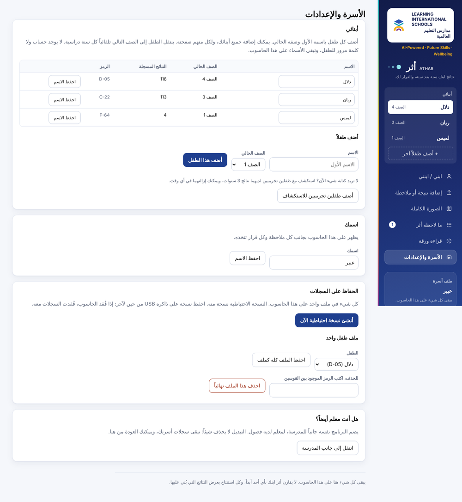
أسماء أبنائك في القائمة الجانبية. انقر الاسم لترى ذلك الطفل، و«أضف طفلاً آخر» أسفل القائمة.
تريد أن تستكشف أولاً؟ انقر أضف طفلين تجريبيين للاستكشاف. لديهما نتائج 3 سنوات غير حقيقية، ويمكنك إزالتهما في أي وقت.
2. أضف نتيجة
النتيجة اختبار أو امتحان أو واجب. يحتاج أثر إلى معرفة موضوع كل جزء في الورقة، لأن المجموع وحده لا يوضح موضع الصعوبة. أمامك طريقتان:
صورة: ضع الورقة المصححة مستوية في إضاءة جيدة وصوّرها من الأعلى مباشرة. يقرأ أثر الدرجات ويملأ السطور. راجع كل سطر مقابل الورقة، وضع علامة على راجعت كل سطر على الورقة، ثم انقر احفظ هذه النتائج. لا يُحفظ شيء قبل وضع العلامة.
كتابة: اختر المادة والصف والفصل الدراسي والسنة، ولكل جزء اختر الموضوع واكتب الدرجة والدرجة الكاملة.
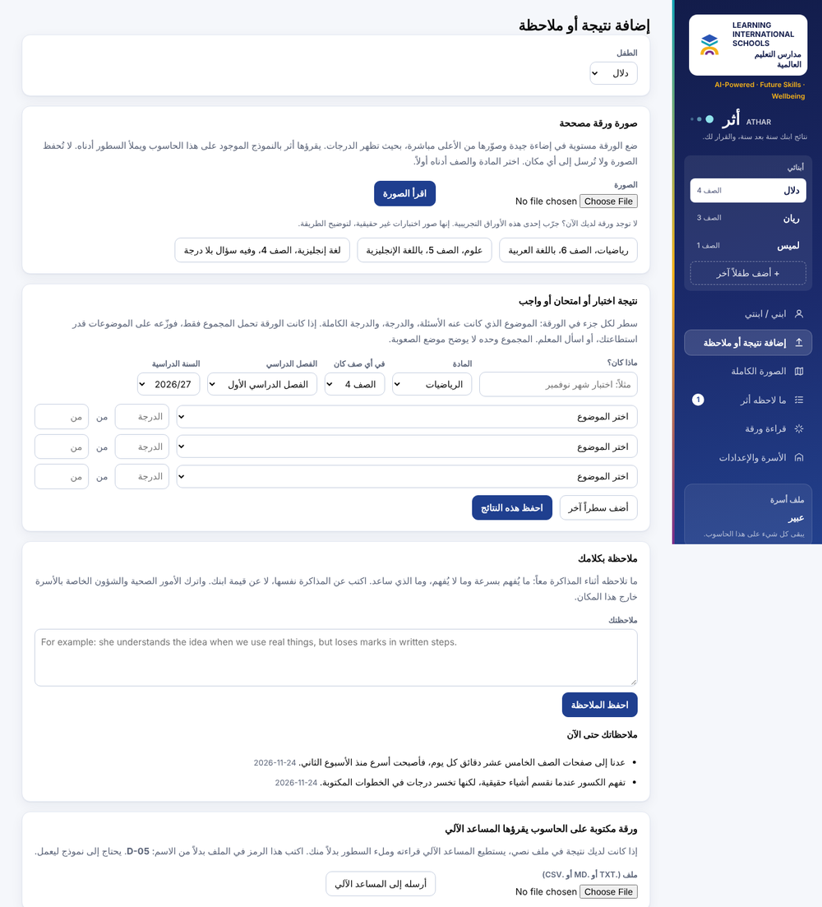
صورة ورقة، أو كتابة الدرجات، أو ملاحظة بكلماتك. أسفل مربع الصورة أوراق تجريبية للتجربة.
يقرأ أثر الصورة الواضحة المستقيمة جيداً. أما في الصورة المظلمة أو المائلة فقد يخطئ دون أن يذكر أنه غير متأكد، ولذلك فالمراجعة مسؤوليتك. ولم تُجرَّب قراءة خط اليد الحقيقي بما يكفي بعد. لا تُحفظ الصورة ولا تخرج من الحاسوب.
أوراق السنوات الماضية مهمة: كلما امتدت النتائج إلى الوراء أكثر، استطاع أثر أن يوضح أكثر.
3. اقرأ الصفحة الرئيسية
عندما يصبح لدى الطفل نحو 6 درجات، تعرض صفحة ابني / ابنتي: ما يسير جيداً، ومن أين تبدأ المساعدة، وما يأتي هذه السنة، وأسئلة يمكنك طرحها على المعلم.
«من أين تبدأ المساعدة» يعود بالصعوبة إلى أقدم موضوع قد تكون بدأت منه. ابدأ بالأقدم.
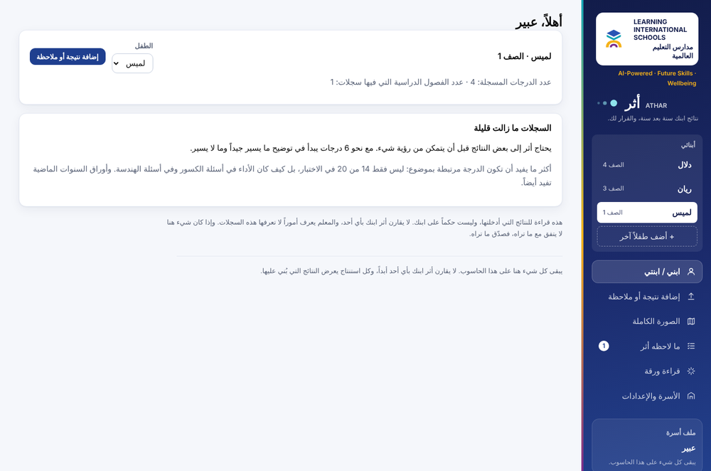
إذا كانت الدرجات أقل من 6، يذكر أثر أن السجلات ما زالت قليلة ولا يقول شيئاً آخر.
4. ما لاحظه أثر
يعرض أثر ملاحظاته ومعها السجلات التي بُنيت عليها. أنت صاحب القرار: احتفظ بما يتفق مع ما تراه في البيت، وارفض ما لا يتفق. لا يُستخدم شيء قبل أن تقرر.
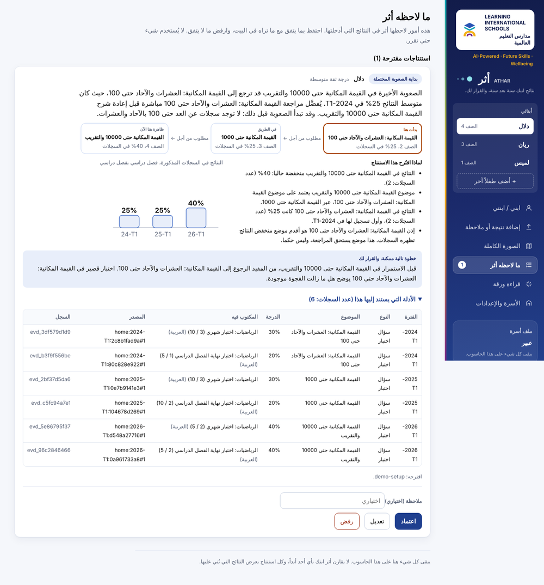
تحت كل ملاحظة الدرجات التي بُنيت عليها، سطراً سطراً.
5. الصورة الكاملة
تعرض الصورة الكاملة كل ما سُجّل عن الطفل: المواد، والمهارات، وخريطة المنهج التي توضح ما يعتمد عليه كل موضوع.
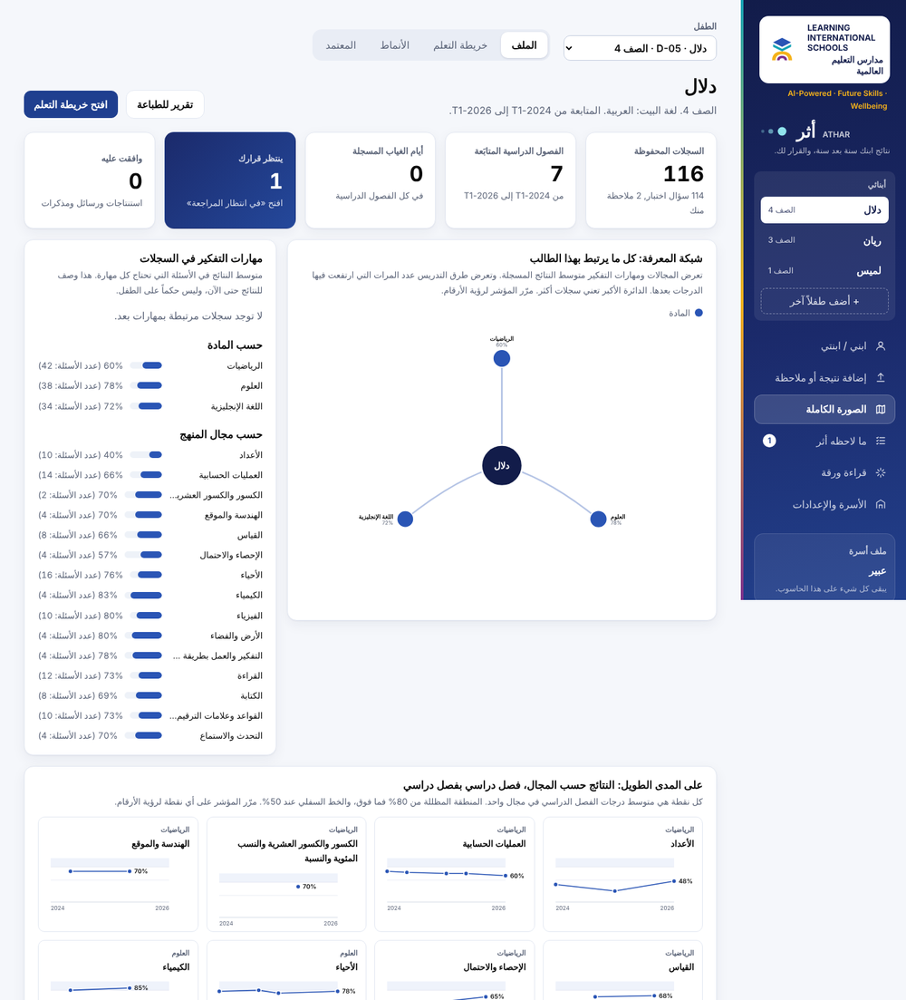
خريطة التعلم. انقر أي موضوع لترى درجاته وتعود إلى ما قبله.
لا يقارن أثر ابنك بأي أحد أبداً. إنه يقرأ النتائج التي أدخلتها فقط، والمعلم يعرف أموراً لا تعرفها هذه النتائج. وإذا كان شيء هنا لا يتفق مع ما تراه، فصدّق ما تراه.
للمعلم والمدرسة
يفتح جانب المدرسة بمدرسة غير حقيقية: 40 طالباً من الصف الأول إلى الصف الحادي عشر على منهج كامبريدج، ومعلموهم، وسجلات عدة سنوات. جرّب عليها كما تشاء.
1. نظرة على الفصل والمدرسة
تعرض نظرة على الفصل عدد السجلات، وما ينتظر قرارك، ومتوسط كل مجال في كل صف. وتعرض خريطة المدرسة الصورة نفسها بالموضوعات. الصفحتان تصفان الموضوعات لا الطلاب، ولا يوجد ترتيب للطلاب في أي مكان.
2. طالب واحد
من الطلاب اختر طالباً. ستجد ملفه، وخريطة التعلم، والأنماط التي استمرت عدة فصول دراسية، وما اعتُمد. في خريطة التعلم انقر موضوعاً نتائجه منخفضة ثم تتبع البداية لترى من أين قد تكون الصعوبة بدأت.
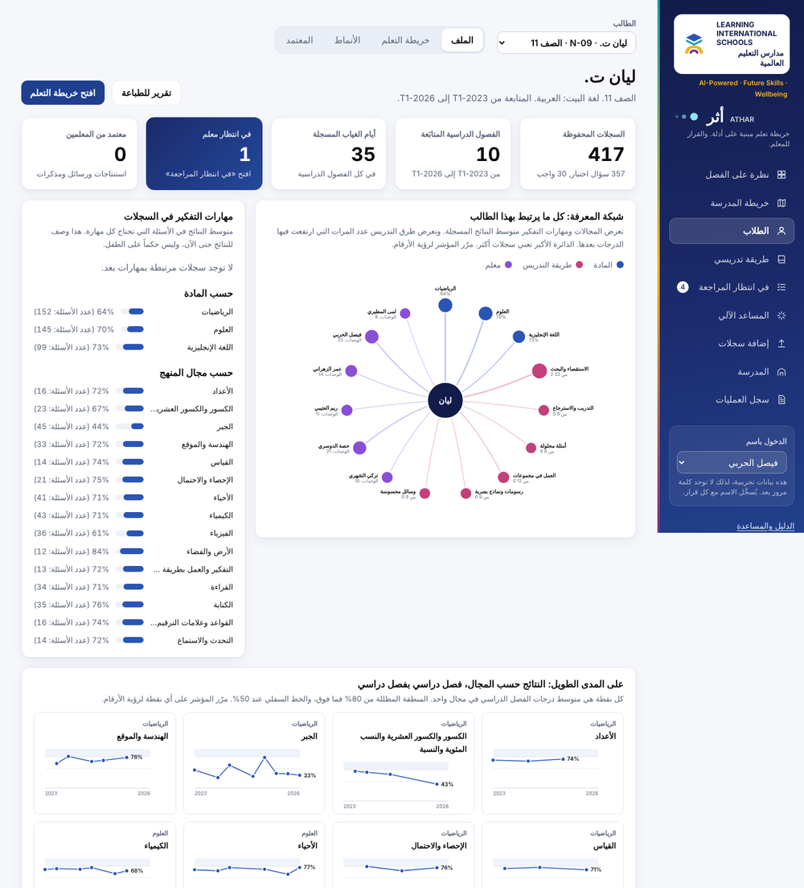
3. في انتظار المراجعة
كل استنتاج ينتظر معلماً مسمّى. افتح الاستنتاج واطّلع على السجلات التي يستند إليها، ثم اختر اعتماد أو تعديل أو رفض. لا يستطيع المساعد اعتماد أي شيء. ويُبنى التقرير المطبوع للطالب مما اعتُمد فقط.
اختر اسمك من «الدخول باسم» قبل أن تقرر، ليُسجَّل القرار باسمك.
4. إضافة سجلات
كشف درجات: نزّل الكشف، واملأه في Excel، وارفعه. هذه الطريقة الدقيقة ولا تحتاج إلى نموذج.
مستند: ورقة اختبار مكتوبة أو ملاحظة معلم. يقرؤها المساعد ويسجّل ما وجده، ويتوقف ليسألك إذا كان شيء غير واضح.
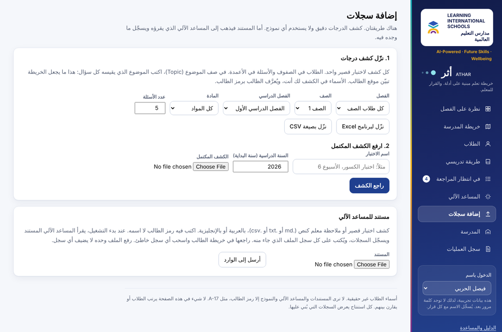
لإضافة طالب جديد، انتقل إلى صفحة المدرسة واستخدم أضف طالباً. يحصل كل طالب على رمز قصير، وتُكتب المستندات بالرمز لا بالاسم.
5. المساعد الآلي
من صفحة المساعد الآلي شغّله على طالب ومستند. يقرأ، ويشغّل التحليلات، ويتوقف عند المعلم مرتين. أما الاستنتاجات نفسها فيستخرجها برنامج عادي، لا النموذج. وهذه الصفحة الوحيدة التي تحتاج إلى النموذج.
6. المدرسة وتسجيل الدخول
يكون تسجيل الدخول غير مفعّل في البداية، فيستطيع أي شخص على الحاسوب فتح أثر. لتفعيله، افتح صفحة المدرسة وأنشئ حساب مسؤول المدرسة. بعدها تحتاج كل صفحة إلى اسم مستخدم وكلمة مرور، ولا يضيف المعلمين إلا المسؤول، ولا يرى كل معلم إلا طلاب فصوله. ويحتوي سجل العمليات على كل ما جرى ومن قام به.
لا تُدخل بيانات طلاب حقيقية الآن. لم يُجرَّب أثر بعد مع معلم حقيقي أو طالب حقيقي.
7. الإضافة إلى المنهج
يأتي أثر بمنهج كامبريدج للرياضيات والعلوم واللغة الإنجليزية من الصف الأول إلى الصف الحادي عشر. ومن صفحة المدرسة، تحت المنهج، يمكنك إضافة موضوعات لمادة أخرى، مثل اللغة العربية أو الدراسات الإسلامية أو الدراسات الاجتماعية، أو لصف آخر.
اختر المادة والصف والفصل الدراسي.
اكتب الموضوعات، كل موضوع في سطر. أو ارفع صفحة الفهرس من الكتاب: ملفاً نصياً أو Word أو Excel، أو صورة. وإذا كان الكتاب PDF، فالتقط لقطة شاشة لصفحة الفهرس.
ضع علامة على دع النموذج يقرؤها إذا أردت أن يكتب النموذج الموضوعات ويقترح أي موضوع يحتاج إلى أي موضوع. يستغرق ذلك نحو دقيقة.
انقر أنشئ مسودة.
ما أضافته المدرسة في الأعلى، ونموذج الإضافة أسفله.
راجع المسودة. يظهر كل موضوع باسمه باللغتين، وصفه وفصله الدراسي ومجاله، والموضوعات التي يحتاج إليها قبله، والموضوعات اللاحقة التي تحتاج إليه. صحّح الأسماء، وأزل كل رابط لا توافق عليه، وأضف الناقص. ثم ضع علامة على راجعت كل موضوع وكل رابط وانقر اعتماد وإضافة للمنهج.
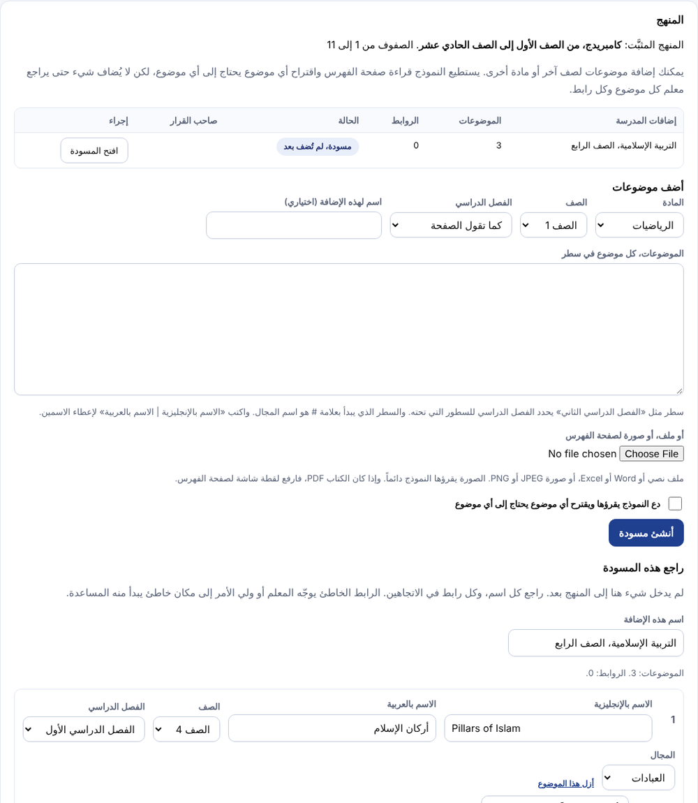
لا يدخل شيء إلى المنهج قبل أن يعتمده معلم مسمّى.
يقرأ النموذج أسماء الموضوعات جيداً، لكن بعض الروابط التي يقترحها تكون خاطئة. والرابط الخاطئ يوجّه المعلم أو ولي الأمر إلى مكان خاطئ يبدأ منه المساعدة، فمراجعتك هي الضمان. ويمكن سحب الإضافة ما دام لا يوجد سجل يستخدم موضوعاتها. ولا يستطيع أولياء الأمور الإضافة إلى المنهج.
المساعد (النموذج)
تحتوي النسخة الكاملة على نموذج مفتوح يعمل على هذا الحاسوب. لا تحتاج إلى تنزيل أي برنامج آخر، ولا يخرج شيء من الحاسوب.
ما يحتاج إلى النموذج: قراءة صورة ورقة، وصفحة قراءة ورقة أو المساعد الآلي.
ما لا يحتاج إليه: كل شيء آخر.
بعد تشغيل أثر، انتظر دقيقة حتى يجهز النموذج.
إذا كانت نسختك بلا نموذج، فستعرض عليك النافذة السوداء تنزيله في المرة الأولى: ملفان حجمهما 6.1 غيغابايت. اضغط Enter وانتظر. يحدث هذا مرة واحدة. وإذا رفضت، فانقر لاحقاً نقراً مزدوجاً على Download the model في مجلد أثر.
إذا واجهت مشكلة
ما حدث
ماذا تفعل
يقول Google Drive إنه لا يستطيع فحص الملف من الفيروسات
هذا طبيعي مع أي ملف كبير. انقر Download anyway.
يقول ويندوز Windows protected your PC
انقر More info ثم Run anyway.
نقرت Start Athar ولم يحدث شيء
تأكد أنك فككت ضغط الملف كله وأنك تشغّل من المجلد المفكوك، لا من داخل ملف zip.
لم يُفتح المتصفح
اكتب http://127.0.0.1:8780 في المتصفح. العنوان الصحيح مكتوب في النافذة السوداء.
تقول الصفحة إنها لا تستطيع الاتصال
أُغلقت النافذة السوداء. انقر نقراً مزدوجاً على Start Athar مرة أخرى.
التشغيل الأول بطيء
برنامج الحماية يفحص الملفات في المرة الأولى. انتظر، فالمرات التالية أسرع.
تقول الصفحة إن النموذج غير جاهز
انتظر دقيقة بعد التشغيل. إذا استمر ذلك، فانظر في مجلد logs. بقية أثر تعمل بلا نموذج.
قراءة الصورة خاطئة
صوّر مرة أخرى في إضاءة أفضل ومن الأعلى مباشرة، أو صحّح السطور يدوياً قبل الحفظ، أو اكتب الدرجات.
قراءة الورقة بطيئة جداً
الحاسوب بلا بطاقة رسومات أو ذاكرته قليلة. اكتب الدرجات يدوياً، فهذا لا يحتاج إلى نموذج.
لا أجد طريقة لإضافة طفل
افتح الأسرة والإعدادات، أو انقر + أضف طفلاً آخر أسفل قائمة الأبناء.
اخترت ولي أمر وأنا معلم، أو العكس
افتح الأسرة والإعدادات أو المدرسة وانقر انتقل إلى جانب المدرسة أو انتقل إلى جانب الأسرة. تبقى السجلات في مكانها.
أريد البدء من جديد
أغلق أثر واحذف مجلد data. هذا يحذف كل ما أضفته والحسابات، فأنشئ نسخة احتياطية أولاً إذا كنت تحتاج إليها.
الحفاظ على السجلات
كل السجلات في ملف واحد داخل مجلد data. من الإعدادات انقر أنشئ نسخة احتياطية الآن واحفظ نسخة على ذاكرة USB من حين لآخر. إذا فُقد الحاسوب، فُقدت السجلات معه.
يمكنك حفظ ملف طالب واحد كاملاً كملف، أو حذفه نهائياً، من الصفحة نفسها.
لنقل أثر إلى حاسوب آخر، أغلقه وانسخ المجلد كله.
يستمع أثر افتراضياً على هذا الحاسوب فقط، ولا يستطيع أي حاسوب آخر على الشبكة فتحه إلا إذا شُغّل لشبكة المدرسة.
لا توجد كلمة مرور على جانب ولي الأمر، فيستطيع أي شخص يستخدم الحاسوب فتح أثر. استخدم حسابات ويندوز إذا كان ذلك يهمك.
Athar in two lines
Athar keeps a learner's results from year to year and shows where they are doing well, where they need help, and where a difficulty may have started. It is one program with two sides: one for a parent, one for a teacher and a school.
This copy is set up for Learning International Schools and comes with the Cambridge curriculum for Mathematics, Science and English, Years 1 to 11. Everything runs on the school's server or on this computer, and there is no account with any company.
This is an early version. The names and records that come with it are all made up. The curriculum inside is a draft that teachers still need to review and match to the school's Marshall Cavendish books.
Starting
Right-click the zip file and choose Extract All. Extract it to a normal place such as Desktop or Documents. Do not run it from inside the zip, and do not put it in Program Files. Extracting takes a few minutes because the file is large.
Open the folder and double-click Start Athar.
If Windows says Windows protected your PC, click More info, then Run anyway. This happens the first time only, because the program is not signed.
A black window opens and, after a short wait, your browser opens Athar at http://127.0.0.1:8780.
Keep the black window open while you use Athar. To stop, close it or double-click Stop Athar.
The first time, Athar asks who is using it. Choose I am a parent or I am a teacher or I work in a school. You can change this later in the settings.
First start. It is the same program either way.
What the computer needs
Windows 10 or 11, 64-bit.
About 8 GB of free disk space.
For the assistant: 16 GB of memory is comfortable. With a graphics card, reading a paper takes about a minute. Without one it can take several minutes.
To remove Athar, delete the folder. Nothing else on the computer was changed.
On the school network and on phones
Athar can run on one school computer so that teachers open it from their laptops and phones over the school network, and it can be installed on a phone's home screen like an app. The steps are in SCHOOL.md. Turn sign-in on first.
For parents
Five minutes and you are set up.
1. Type your name and add your children
Choose I am a parent and type your name. Then, for each child, type a first name, choose the grade they are in now, and press Add this child. Add all your children; each one gets their own page. There is no password and no account for a child, and a child moves up a grade by themselves each year.
Your children are listed in the side panel. Click a name to see that child. "Add another child" is under the list.
Want to look around first? Press Add two made-up children to look around. They have three years of invented results, and you can remove them at any time.
2. Add a result
A result is a test, an exam or a piece of homework. Athar needs to know what each part of the paper was about, because a total alone cannot show where the difficulty is. There are two ways:
A photo: lay the marked paper flat in good light and take the photo straight from above. Athar reads the marks and fills in the lines. Check every line against the paper, tick I checked every line against the paper, and press Save these results. Nothing is saved before you tick the box.
Typing: choose the subject, the grade, the term and the year. For each part, choose the topic and type the mark and what it was out of.
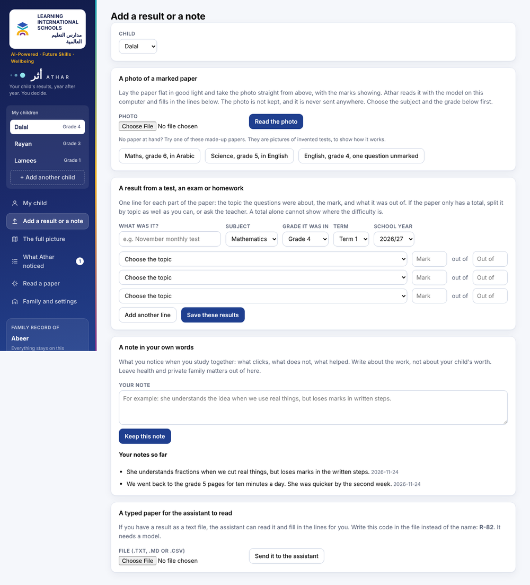
A photo of a paper, typed marks, or a note in your own words. Under the photo box there are made-up papers to try it with.
Athar reads a clear, straight photo well. On a dim or tilted photo it makes mistakes and does not say when it is unsure, which is why the check is yours. Real handwriting has not been tested enough yet. The photo is not kept and never leaves the computer.
Papers from earlier years are worth adding: the further back the results go, the more Athar can tell.
3. Read the home page
Once a child has about six marks, My child shows what is going well, where to help first, what is coming up this year, and questions you could ask the teacher.
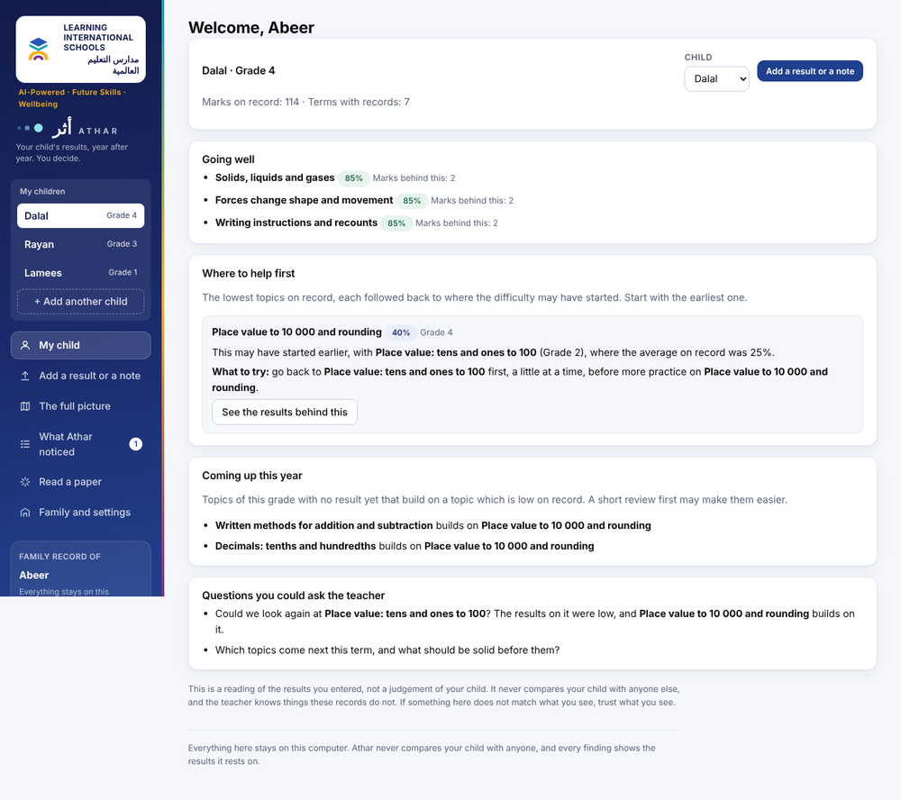
"Where to help first" follows a difficulty back to the earlier topic where it may have started. Start with the earliest one.
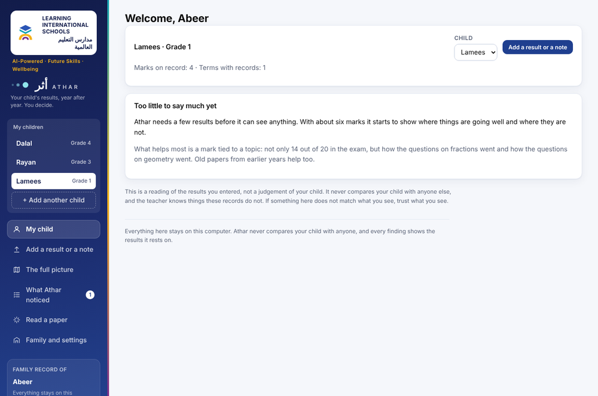
With fewer than six marks, Athar says there is too little to tell and says nothing else.
4. What Athar noticed
Athar shows what it noticed, with the records behind it. You decide: keep what matches what you see at home, and reject what does not. Nothing is used until you decide.
Under each finding are the marks it rests on, line by line.
5. The full picture
The full picture shows everything on record for a child: subjects, skills, and the curriculum map that shows which topic builds on which.
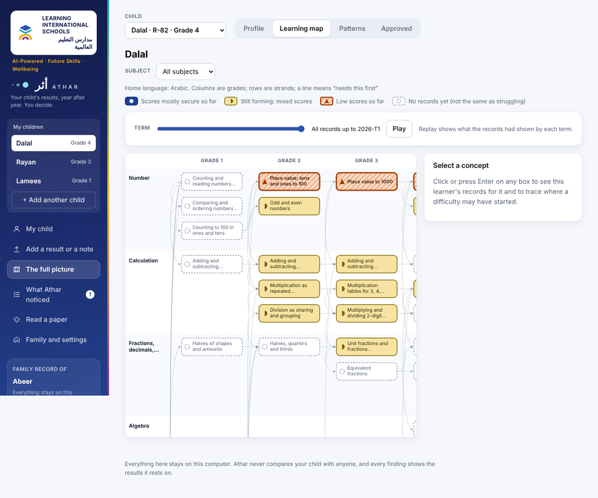
The learning map. Click any topic to see its marks and to trace back to the topics before it.
Athar never compares your child with anyone. It reads only the results you entered, and the teacher knows things these results do not. If something here does not match what you see, trust what you see.
For teachers and schools
The school side opens with a made-up school: 40 learners from Year 1 to Year 11 on the Cambridge curriculum, their teachers, and several years of records. Try anything on it.
1. The class and the school at a glance
Class overview shows how many records there are, what is waiting for your decision, and the average for each area in each grade. School map shows the same picture by topic. Both pages describe topics, not learners, and no page ranks learners.
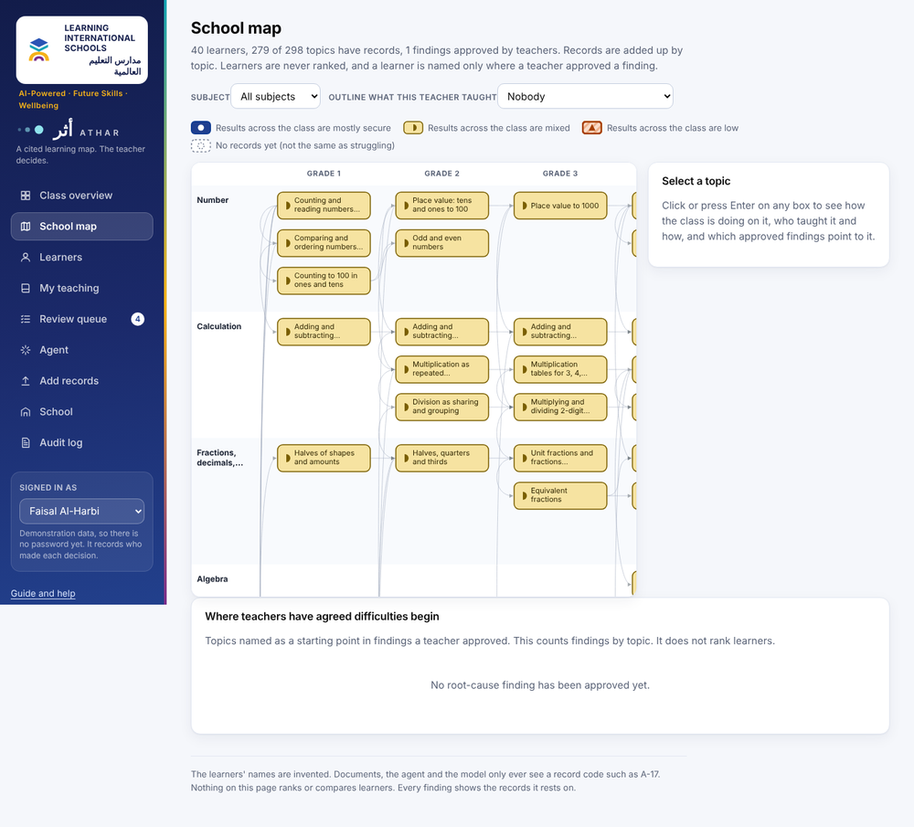
2. One learner
Under Learners, choose a learner. You get their profile, the learning map, the patterns that held over several terms, and what has been approved. On the learning map, click a topic with low results, then Trace back, to see where the difficulty may have started.
3. The review queue
Every finding waits for a named teacher. Open a finding, look at the records behind it, then approve, edit or reject it. The assistant cannot approve anything. A learner's printable report is built from approved findings only.
Choose your name under "Signed in as" before you decide, so the decision is recorded under your name.
4. Adding records
A marks sheet: download the sheet, fill it in with Excel, and upload it. This is the exact way and it needs no model.
A document: a typed quiz sheet or a teacher's note. The assistant reads it and records what it finds, and stops to ask you when something is unclear.
To add a new learner, open the School page and use Add a learner. Each learner gets a short code, and documents are written with the code, not the name.
5. The agent
On the Agent page, start it on a learner and a document. It reads, runs the analyses, and stops for a teacher twice. The findings themselves are reached by plain code, not by the model. This is the only page on the school side that needs the model.
6. The school and sign-in
Sign-in is off at first, so anyone at this computer can open Athar. To turn it on, open the School page and create the school admin. From then on every page needs a username and a password, only the admin adds teachers, and each teacher sees only the learners of their own classes. The Audit log lists every action and who did it.
Do not put real learner data in it yet. Athar has not been used with a real teacher or a real learner.
7. Adding to the curriculum
Athar comes with the Cambridge curriculum for Mathematics, Science and English, Years 1 to 11. On the School page, under The curriculum, you can add topics for another subject, such as Arabic, Islamic Studies or Social Studies, or another grade.
Choose the subject, the grade and the term.
Type the topics, one on each line. Or upload the contents page of the book: a text, Word or Excel file, or a picture. For a PDF, take a screenshot of the contents page.
Tick Let the model read it if you want the model to list the topics and suggest which topic needs which. This takes about a minute.
Press Make a draft.
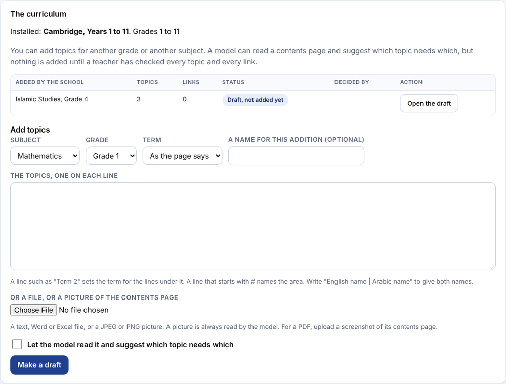
What the school has added is at the top, and the form to add more is under it.
Check the draft. Every topic shows its name in both languages, its grade, term and area, the topics it needs first, and the later topics that need it. Fix the names, remove every link you do not agree with, and add the ones that are missing. Then tick I checked every topic and every link and press Approve and add to the curriculum.
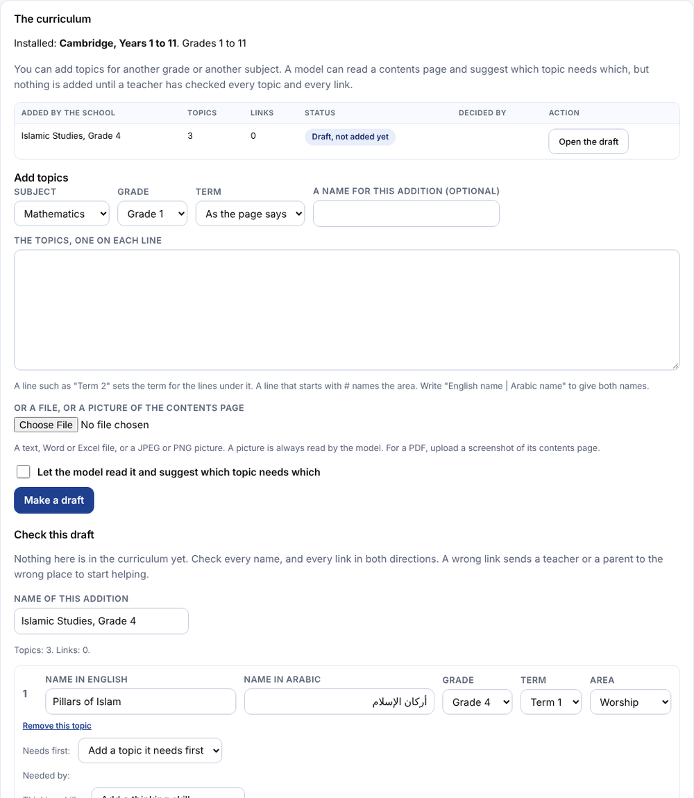
Nothing enters the curriculum before a named teacher approves it.
The model reads topic names well, but some of the links it suggests are wrong. A wrong link sends a teacher or a parent to the wrong place to start helping, so your check is the safeguard. An addition can be withdrawn as long as no record uses its topics. Parents cannot add to the curriculum.
The assistant (the model)
The full version has an open model inside that runs on this computer. You do not need to install any other program, and nothing leaves the computer.
What needs the model: reading a photo of a paper, and the Read a paper or Agent page.
What does not: everything else.
After starting Athar, wait a minute for the model to be ready.
If your copy came without the model, the black window offers to download it the first time: two files, 6.1 GB in all. Press Enter and wait. You do this once. If you said no, double-click Download the model in the Athar folder later.
If something is not working
What happened
What to do
Google Drive says it cannot scan the file for viruses
This is normal for any large file. Click Download anyway.
Windows says "Windows protected your PC"
Click More info, then Run anyway.
I double-clicked Start Athar and nothing happened
Make sure you extracted the whole zip and are starting it from the extracted folder, not from inside the zip.
The browser did not open
Type http://127.0.0.1:8780 into the browser. The black window shows the exact address.
The page says it cannot connect
The black window was closed. Double-click Start Athar again.
The first start is slow
Your antivirus is checking the files for the first time. Wait; later starts are quicker.
The page says the model is not ready
Wait a minute after starting. If it stays that way, look in the logs folder. The rest of Athar works without the model.
A photo was read wrongly
Take it again in better light, straight from above, or correct the lines by hand before saving, or type the marks.
Reading a paper is very slow
The computer has no graphics card or little memory. Type the marks instead; that needs no model.
I cannot find how to add a child
Open Family and settings, or press + Add another child under the list of children.
I chose parent but I am a teacher, or the other way round
Open Family and settings or School and press the button that switches to the other side. The records stay where they are.
I want to start again from nothing
Stop Athar and delete the data folder. This removes everything you added and the accounts, so make a backup first if you need one.
Keeping records safe
All the records are in one file in the data folder. In the settings, press Make a backup now and save a copy to a USB stick now and then. If this computer is lost, so are the records.
The same page can save one learner's whole record as a file, or delete it for good.
To move Athar to another computer, stop it and copy the whole folder.
By default Athar listens on this computer only, and no other computer on the network can open it unless it is started for the school network.
On the parent side there is no password, so anyone who uses the computer can open Athar. Use Windows user accounts if that matters to you.